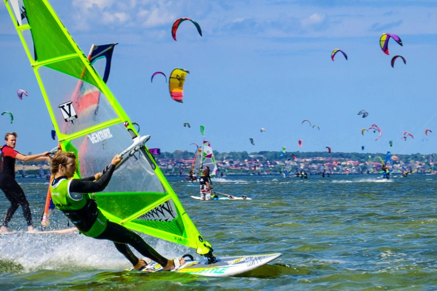

Najlepsze miejsca do uprawiania windsurfingu
Hel, Polska
Najlepsza krajowa miejscówka na profesjonalny kurs czy wyjazd windsurfingowy. Zwłaszcza dla tych, którzy nie mają zbyt wielkiego budżetu wyjazdowego lub po prostu kochają polskie morze. Dobre statystyki wiatrowe uczyniły Półwysep Helski polską stolicą wind i kite.
Hel słynie ze świetnych warunków (oczywiście jak na polskie warunki) do nauki windsurfingu i kitesurfingu od podstaw oraz jako dobre miejsce na szkolenie umiejętności. Wspaniała baza noclegowa na wszystkich poziomach – od hoteli po campingi oraz liczne szkółki windsurfingowe i kitesurfingowe – wszystko to sprawia, że Hel jest spotem dla każdego.Wszystko to z powodu specyficznego ukształtowania wybrzeża, które zapewniają dobre warunki wiatrowe oraz dostęp do dwóch akwenów – Zatoki Puckiej oraz otwartego morza.
